| De Broglie relation | $p={h}/{λ}$ ${\bo p}=ħ{\bo k}$ |
| Planck-Einstein relation | $E=hν=ħω$ |
| Dispersion$^{a,b}$ | $\table(∆a)^2,=,‹(a-‹a›)^2›;,=,‹a^2›-‹a›^2$ |
| General uncertainty relation | $(∆a)^2(∆b)^2≥1/4‹{\bo \i}[a↖{∧},b↖{∧}]›^2$ |
| Momentum-position uncertainty relation$^c$ | $∆p∆x≥ħ/2$ |
| Energy-time uncertainty relation | $∆E∆t≥ħ/2$ |
| Number-phase uncertainty relation | $∆n∆φ≥1/2$ |
$^a$ Dispersion in quantum physics corresponds to variance in statistics.
$^b$ An observable $(a,b)$ is a directly measurable parameter of a system.
$^c$ Also known as the "Heisenberg uncertainty relation."
| $p,{\bo p}$ | particle momentum | $h$ | Planck constant |
| $ħ$ | $h\text"/"(2π)$ | $λ$ | de Broglie wavelength |
| ${\bo k}$ | de Broglie wavevector | $E$ | energy |
| $ν$ | frequency | $ω$ | angular frequency $(=2πν)$ |
| $a,b$ | observables$^b$ | $‹•›$ | expectation value |
| $(∆a)^2$ | dispersion of $a$ | $a↖{∧}$ | operator for observable $a$ |
| $[•,•]$ | commutator | $x$ | particle position |
| $t$ | time | $n$ | number of photons |
| $φ$ | wave phase |
Some Principles and Effects (quantization of energy)
THE PHOTOELECTRIC EFFECT
The ejection of electrons from a metal surface by light is called the photoelectric effect.
An experiment by Philipp Lenard showed that the energy of the detached electron is given by the frequency of the irradiating light.
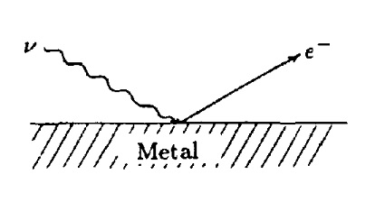 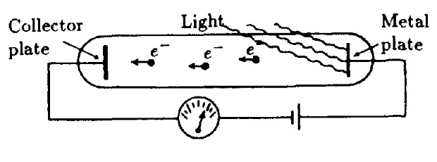
Monochromatic light yields electrons of a definite energy. An increase in light intensity leads to the emission of more
electrons, but does not change their energy. This is in clear contradiction to classical wave theory, where the energy of a wave is given by its intensity.
If we carry out the experiment with monochromatic light of different frequencies, a linear dependence between energy and frequency is obtained as
$E∝(a+bω)$
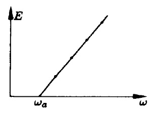
The proportionality factor, i.e. the slope of the straight line, is found to be Planck's constant $h$ divided by $2π$, so that
$E=ħ(ω-ω_a)=h(ν-ν_a)$
with $h=2πħ=6.6×10^{-34}\text"Ws"^2$.
Einstein interpreted this effect by postulating discrete quanta of light (photons) with energy $ħω$. Increasing the intensity of the light beam also increases the number of photons, which can break off correspondingly more electrons from the metal.
In these experiments, a frequency limit $ω_a$ appears, which depends on the kind of metal. Below this frequency limit, no electrons can leave the metal. This means that a definite escape energy $ħω_a$ is needed to raise electrons from the surface of the metal.
The light quantum that has to be postulated to understand the photoelectric effect moves with the velocity of light. Hence it follows from Einstein's Theory of Relativity that the rest mass density of the photon is equal to zero.
If we set the rest mass equal to zero in the general relation for the total energy
$E^2=(m_0c^2)^2+p^2c^2=ħ^2ω^2$
$E=ħω=hν$
and express the frequency by the wave number $k=ω\text"/"c$, the momentum of the photon follows as
$p=ħk=ħω\text"/"c$
or written as a vector identity, assuming that the direction of the momentum of the photon should correspond to the propagation direction of the light wave,
${\bo p}=ħ{\bo k}$.
$-$
THE COMPTON EFFECT
When X-rays are scattered by electrons, a shift in frequency can be observed, the amount of this shift depending on the scattering angle.
The effect was discovered by Compton in 1923 and explained on the basis of the photon picture simultaneously by Compton himself and Debye.
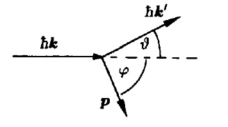
We assume the electron is unbound and at rest before the collision. Then the conservation of energy and momentum reads:
$ħω=ħω'+{m_0c^2}/{√{1-β^2}}m_0c^2$,
$h{\bo k}=h{\bo k}'+{m_0{\bo v}}/{√{1-β^2}}$
To obtain a relation between the scattering angle $ϑ$ and the frequency shift, we divide momentum into components parallel and vertical to the direction of incidence. This yields, with $k=ω\text"/"c$,
${ħω}/{c}={ħω'}/{c}\cos{ϑ}+{m_0{\bo v}}/{√{1-β^2}}\cos{φ}$
and
${ħω'}/{c}\sin{ϑ}={m_0{\bo v}}/{√{1-β^2}}\sin{φ}$
From these two component equations, we can first eliminate $φ$ and then the electron velocity $v(β=v\text"/"c)$. Hence for the frequency difference we have
$ω-ω'={2ħ}/{m_0c^2}ωω'\sin^2{ϑ/2}$
If we put $ω=2πc\text"/"λ$, we obtain the Compton scattering formula in the usual form with the difference in wavelength as a function of the scattering angle $ϑ$
$λ-λ'=4π{ħ}/{m_0c^2}\sin^2{ϑ/2}$
The scattering formula shows that the change in wavelength depends only on the scattering angle $ϑ$. During the collision the photon loses a part of its energy and the wavelength increases $(λ'>λ)$.
The factor $2πħ\text"/"m_0c$ is called the Compton wavelength $λ_c$ of a particle with rest mass $m_0$ (here, an electron). The Compton wavelength can be used as a measure of the size of a particle. The kinetic energy of the scattered electron is then
$T=ħω-ħω'=ħc2π\({1}/{λ}-{1}/{λ'}\)$
or
$T=ħω{2λ_c\sin^2{ϑ/2}}/{λ+2λ_c\sin^2{ϑ/2}}$
Thus the energy of the scattered electron is directly proportional to the energy of the photon. Therefore the Compton effect can only be observed in the domain of short wavelengths (X-rays and $γ$-rays). To appreciate this observation fully, we have to remember that in classical electrodynamics, no alteration in frequency is permitted in the scattering of electromagnetic waves; only light quanta with momentum $ħ{\bo k}$ and energy $ħω$ make this possible. Thus the idea of light quanta has been experimentally confirmed by the Compton effect. A relatively board Compton line appears in the experiment, due to certain momentum distributions of the electrons and because the electrons are bound in atoms.
The Compton effect is a further proof for the concept of photons and for the validity of momentum and energy conservation in interaction processes between light and matter.
$-$
THE RITZ COMBINATION PRINCIPLE
In the course of investigations of the radiation emitted by atoms, it appeared that characteristic spectral lines belong to each atom and that these lines can be formally arranged into certain spectral series (for example, the Balmer series in the hydrogen atom). The Ritz combination principle (1908) states that new spectral lines can be found by additive and subtractive combination of two known spectral lines. The existence of spectral lines means that transformations (of the electrons) between discrete energy levels take place within the atom.
The frequency condition $E=ħω$ yields an explanation for the Ritz combination principle. Considering the transition of an atom from a state with energy $E_l$ to a state with energy $E_n$, we have
$ħω_{ln}=E_l-E_n=E_l-E_m+E_m-E_n$
or the frequencies,
$ω_{ln}=ω_{lm}+ω_{mn}$
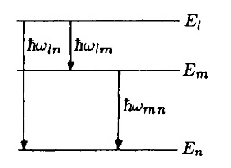
Here the energy levels and the corresponding transitions are represented schematically. The spectral series result from transitions from different higher energy levels into a common "ground state" $E_n$. Thus, the spectral analysis of atoms suggests quite clearly that only discrete energy levels exist in an atom and that energy can be transferred only by light quanta with a definite energy.
$-$
THE FRANK-HERTZ EXPERIMENT
Another experiment demonstrating the quantization of energy was performed by Franck and Hertz in 1913, using the cathode $K$ in a cylindrical grid $A$ closely surrounded by a third electrode $Z$ The electrons are accelerated between $K$ and $A$ to reach $Z$ through the anode grid. A small countervoltage prevents very slow electrons from reaching $Z$. The experiment yields a current-voltage characteristic between $K$ and $Z$ as shown
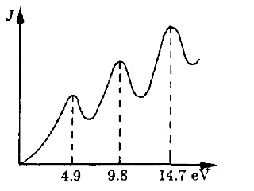
As long as the energy of the electron in the field does not exceed $4.9\text"eV"$, the electrons can cross the tube without a loss of energy. The exchange of energy due to elastic collisions between electrons and mercury atoms can be neglected. The current increases steadily, but as soon as the energy of the electrons has reached $4.9 \text"eV"$, the current drops drastically. A mercury atom obviously can take up exactly this much energy from the electrons in a collision. Thereafter an electron has insufficient kinetic energy to reach
$-$
THE STERN-GERLACH EXPERIMENT
In their experiment performed in 1921, Stern and Gerlach observed the splitting of an atomic beam in an inhomogeneous magnetic field. If an atom possesses a magnetic moment ${\bo m}$, it will be affected not only by a torque, but also by a force ${\bo F}$ when in an inhomogeneous magnetic field ${\bo H}$. The potential energy in the magnetic field is given by $V=-{\bo m}⋅{\bo H}$; the force is given by the gradient, i.e. ${\bo F}=-\text"grad" V=\text"grad" {\bo m}⋅{\bo H}$.
In the experiment, a beam of neutral silver atoms was sent through an inhomogeneous magnetic field and the distribution of the atoms after passing the field was measured. Classically one would expect a broadening of the beam, due to the varying strength of the magnetic field. In practice, however, the beam is split into two distinct partial beams. The intensity distribution on the screen is shown in figure.
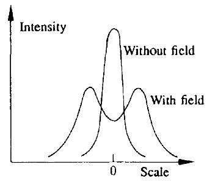
This doubly peaked distribution obviously means that the magnetic moment of the silver atoms cannot orient itself arbitrarily with respect to the magnetic field; rather, only two opposing orientations of the magnetic moment in the field are possible. This cannot be understood classically. Obviously the phenomena of quantization appearing in the atomic domain are not restricted to energy and momentum only, but are also found in other physical quantities. This particular quantization is called directional quantization (or quantization of the angular momentum).
$*$
DE BROGLIE RELATION
WAVE OF MATTER
Investigations on the nature of light showed that, depending on the kind of experiment performed, light must be described by electromagnetic waves or by particles (photons). Thus the wave aspect appears in the context of diffraction and interference phenomena, whereas the particulate aspect shows up most distinctly in the photoelectric effect. So for light, the relations describing wave-particle duality are ready known. But what about material particles? Their particulate nature is rather obvious; do they also possess a wave aspect?
In addition to their corpuscular properties, de Broglie assigned wave properties to particles, thus transferring the relations known from light to mater. What is true for photons should be valid for any type of particles. Hence, according to the particulate picture, we assign to a particle, for example an electron with mass $m$, propagating uniformly with velocity ${\bo v}$ through field-free space, an energy $E$ and a momentum ${\bo p}$. In the wave picture, the particle is described by a frequency $ν$ and a wave vector ${\bo k}$. Following de Broglie, we now speculate: since these descriptions should only designate two different aspects of the same object, the following relations between the characteristic quantities should be valid:
$E=hν=ħω$
and
${\bo p}=ħ{\bo k}={h}/{λ}{{\bo k}}/{|{\bo k}|}$
These equations are true for the photon (electromagnetic field); now they are postulated to be valid for all particles. Then to every free particle, understood in the above sense, a plane wave determined up to an amplitude factor $A$ is assigned:
$ψ\({\bo r},t\)=A\exp{\[\i\({\bo k}⋅{\bo r}-ωt\)\]}$
or, using the above relations,
$ψ\({\bo r},t\)=A\exp{\[\i\({\bo p}⋅{\bo r}-Et\)\text"/"ħ\]}$
Following de Broglie, the plane wave connected to the particle has a wavelength
$λ={2π}/{k}={h}/{p}={h}/{mv}$
where the second relation is valid only for particles with nonvanishing rest mass. Because of the small value of the quantum of action, the particle mass must be sufficiently small to generate a measurable wavelength. For this reason, the wave character of matter first appears in atomic region. The phase
$α={\bo k}⋅{\bo r}-ωt$
of the wave $ψ\({\bo r},t\)$ propagates with velocity ${\bo u}={\bo r}↖{.}$ according the relation
${dα}/{dt}={\bo k}⋅{\bo r}↖{.}-ω$ $={\bo k}⋅{\bo u}-ω=0$.
Hence, we get for the magnitude of the phase velocity ${\bo u}$ (${\bo k}$ and ${\bo u}$ have the same direction)
$|{\bo u}|={ω}/{k}$.
In the following, we will show that matter waves - in contrast with electromagnetic waves - even show dispersion in a vacuum. We must therefore calculate $ω(k)$. The relativistic energy theorem for free particles
$E^2=m_0^2c^4+p^2c^2$
can, for $v≪c$, be put into form
$E=mc^2=√{m_0^2c^4+p^2c^2}$ $=m_0c^2+{p^2}/{2m_0}+...$ .
Now we can give the frequency as a function of the wave number:
$ω(k)={m_0c^2}/{ħ}+{ħk^2}/{2m_0}+...$ .
Therefore, the phase velocity $u={ω}/{k}$ is a function of $k$ in a vacuum, i.e.
$u={m_0c^2}/{ħk}+{ħk}/{2m_0}+...$ ,
so that the matter waves show dispersion even there, i.e. waves with different wave number (wavelength) have different phase velocities. On the other hand, for a phase velocity $u$, the following relation holds:
$u={ω}/{k}={ħω}/{ħk}={E}/{p}={mc^2}/{mv}={c^2}/{v}$
Because $c>v$, the phase velocity of matter waves is always larger than the velocity of light in a vacuum. Hence, it cannot be identified with the velocity of the assigned particles. Because these are massive, they can only propagate more slowly than light does.
$-$
THE GROUP VELOCITY
The group velocity is calculated using
$v_g={dω}/{dk}={d(ħω)}/{d(ħk)}={dE}/{dp}$ ;
(it will be proven below). The variation of energy $d{\bo E}$ of the particle moving under the influence of a force ${\bo F}$ along a path $d{\bo s}$ is $dE={\bo F}⋅d{\bo s}$ and because ${\bo F}=d{\bo p}\text"/"dt$ we therefore have
$dE={d{\bo p}}/{dt}⋅d{\bo s}=d{\bo p}⋅{\bo v}$ .
Since ${\bo v}$ and ${\bo p}=m{\bo v}$ are parallel, the following equations hold:
$dE=|{\bo v}||d{\bo p}|=vdp$
or
${dE}/{dp}=v$
Hence, the group velocity of a matter wave is identical with the particle velocity, i.e.
$v_g=v$
We can also deduce this result in a different way. If we want to describe a particle as a spatially limited, we cannot describe it by a plane wave. Instead, we try to describe the particle by a finite wave packet, which with the help of a Fourier integral, is written as a superposition of harmonic waves, differing in wavelength and phase velocity. For simplicity we investigate a group of waves propagating in the $x$ direction
$ψ(x,t)=∫↙{k_0-∆k}↖{k_0+∆k} c(k)\exp{(\i\[kx-ω(k)t\])}dk$.
Here, $k_0=2π\text"/"λ_0$ is the mean wave number of the group and $∆k$ is the measure of the extension (frequency spread) of the wave packet, assumed to be small $(∆k≪k_0)$. Therefore, we can expand the frequency $ω$, which is a function of $k$, in a Taylor series in the interval $∆k$ about $k_0$, and neglect terms of the order $(∆k)^n=(k-k_0)^n$, $n≥2$, i.e.
$ω(k)=ω(k_0)+\({dω}/{dk}\)_{k=k_0}(k-k_0)$ $+1/2\({d^2ω}/{dk^2}\)_{k=k_0}(k-k_0)^2+...$ .
We take $ξ=k-k_0$ as new integration variable $ξ$ and assume the amplitude $c(k)$ to be a slowly varying function of $k$ in the integration interval $2∆k$. The term $(dω\text"/"dk)_{k-k_0}=v_g$ is a group velocity. Thus, we have
$ψ(x,t)=\exp{(\i\[k_0x-ω_0t\])}$ $∫↙{-∆k}↖{∆k} \exp{\[(\i(x-v_gt))ξ\]}dξ$
Integration, transformation and the approximation $c(k_0+ξ)≈c(k_0)$ lead to the result
$ψ(x,t)=C(x,t)\exp{(\i\[k_0x-ω(k_0)t\])}$
with
$C(x,t)=2c(k_0){\sin\[∆k(x-v_gt)\]}/{x-v_gt}$
Since the argument of the sine contains the small quantity $∆k,C(x,t)$ varies only slowly depending on time $t$ and coordinate $x$. Therefore, we can regard $C(x,t)$ as the amplitude of an approximately monochromatic wave and $k_0x-ω(k_0)t$ and abbreviating the term
$∆k(x-v_gt)=z$,
we see that variation in amplitude is determined by the factor
${\sin z}/{z}$.
This has the properties
$\lim↙{z→0}{\sin z}/{z}=1\text" "$ for $z=0$,
${\sin z}/{z}=0\text" "$ for $z=±π\text" , "±2π$.
If we further increase the absolute value of $z$, the function $\sin z\text"/"z$ runs alternately through maxima and minima, the function values of which are small compared with the principal maximum at $z=0$, and quickly converges to zero. Therefore, we can conclude that superposition generates a wave packet whose amplitude is nonzero only in a finite region, and is described by $(\sin z)\text"/"z$. The form of such packet at a certain time is illustrated
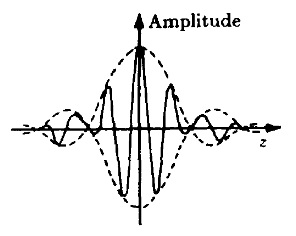
The modulating factor $(\sin z)\text"/"z$ of the amplitude assumes for $z→0$ the maximal value $1$. Therefore, for $z=0$
$v_gt-x=0$ .
which means that the maximum of the amplitude is a plane, propagating with velocity
${dx}/{dt}=v_g$ .
The propagation velocity of the plane of maximal amplitude has to be identified with the group velocity $v_g$, which, as we determined earlier, is the velocity of energy transport.
The group velocity is the velocity of the whole wave packet ("matter-wave" group).
We can understand this in another, shorter way: if we demand $|ψ(x,t)|^2=\text"const."$ , we conclude that $v_gt-x=\text"const",$ , and, hence, by differentiation, $x↖{.}=v_g$. Thus, the fixed constant value $|ψ(x,t)|^2$ moves with group velocity $v_g$. Differentiating the dispersion relation of $ω(k)$, we get for $v_g$:
$v_g=\({dω}/{dk}\)_{k=k_0}=\({ħk}/{m_0}\)_{k=k_0}$ $={ħk_0}/{m_0}={p}/{m_0}$.
From this, we must not in general conclude that the group velocity of a matter-wave group coincides with the classical particle velocity. All results derived up to now were gained under the simplification that all terms in the expansion of $ω(k)$ higher than first order can be neglected. This allowed so long as the medium is free of dispersion. Since de Broglie waves show dispersion even in a vacuum, the derivative $d^2ω\text"/"dk^2≠0$, i.e. it is nonzero. This implies that the wave packet does not retain its form, but gradually spreads (each of the many monochromatic waves forming the packet has a slightly different frequency and therefore a different propagation velocity). If the dispersion is small, i.e.
${d^2ω}/{dk^2}≈0$ ,
for a certain time, we can assign a particular form to the wave packet. Then we can consider the matter-wave group as moving as a whole with the group velocity $v_g$
Following de Broglie, we assign to each uniformly moving particle a plane wave with wavelength $λ$. To determine this wavelength, we start with de Broglie's basic equations. For the wavelength, the following holds:
$λ={2π}/{k}={2πħ}/{p}={h}/{p}$.
If we assume the velocity of the particle to be small $v≪c$, and use the equation
$E={p^2}/{2m_0}$,
we get the wavelength
$λ={h}/{√{2m_0E}}$,
meaning that we must know the rest mass of the particle in motion to determine its wavelength. If we consider, for example, an electron with kinetic energy $E=10\text"keV"$ and rest mass $m_0=9.1×10^{-28}\text"g"$, then its matter wavelength is $λ=0.122\A↖{o}$ $=0.122×10^{-8}cm$.
As we know, the resolution of a small object under a microscope depends upon the wavelength of the light used to illuminate the object. The shorter the wavelength, the shorter the distance is between two points that can be seen distinctly through the microscope. The wavelength of visible light can typically be chosen as $λ_L≈5000 \A↖{o}$, permitting a magnification of about $2000$ times. If electrons are used instead of visible light to "scan" an object, magnification of up to $500\text" "000$ times and a resolution about $5-10 \A↖{o}$ can be achieved. Finally, protons and mesons in the GeV region $(10^9\text"eV")$ have wavelengths so small that it is possible to use them to investigate the inner structure of elementary particles.
$-$
THE DIFFRACTION OF MATTER WAVES
Interference and diffraction phenomena are unique proofs of the occurrence of waves. In particular, destructive interference cannot be explained using the corpuscular picture. While the photoelectric effect and the Compton effects show the corpuscular nature of light, the diffraction of electron rays proves the existence of matter waves.
Since the wavelength of electrons is too small for diffraction by an artificial grid, crystal lattices are used for scattering. These experiments are in general a repetition of the corresponding structural investigations performed with X-rays.
Davisson and Germer applied Laue's method for X-ray diffraction. Here, the surface of a monocrystal is used as a plane diffraction grid. The electrons are scattered at the surface of the crystal, but do not penetrate it. So, the experimental setup and the path of the electron rays is shown
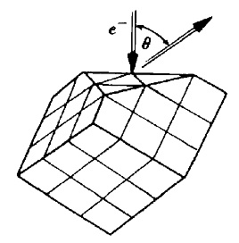 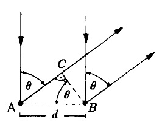
As can be seen in the figure, diffraction maxima appear if the condition
$nλ=d\sin θ$
is filled. If the electron passes through an accelerating voltage $U$, its energy is given by $eU$, and it follows that
${nh}/{d√{2m_0e}}=√{U}\sin θ$ ,
which, indeed, is confirmed by experiment.
Tartakowski and Thomson correspondingly used the Debye-Scherrer method of X-ray scattering. Here, monochromatic X-radiation is diffracted by a body consisting of compressed crystal powder. The crystal powder represents a spatial diffraction grid. Because of the disordered arrangement, there are always crystals that comply with the bending condition. We can see the path of the rays.
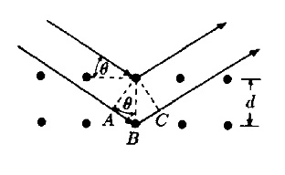 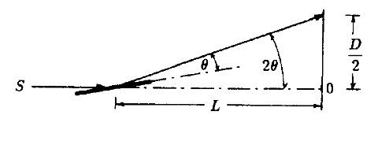
The diffraction maxima appear under the condition (the Wulf-Bragg relation)
$2d\sin θ=nλ$ .
Owing to the statistical distribution of the minicrystals in the crystal powder, the apparatus - and correspondingly the diffraction figures - are symmetrical with respect to the ${\ov SO}$ axis. Because of the radial symmetry of the interference patterns, circles appear around $O$ on the screen. Obviously, the relation $\tan (2θ)=D\text"/"2L$ is valid, where $L$ is the distance between scatterer and screen. The experimental setup is chosen in such a way that all angles are small, thus permitting the approximation $\tan θ≈2θ$. From the Wulf-Bragg equation we get
$Dd=2nLλ$ .
If electron rays are used, we insert the de Broglie wavelength into above relation and find that
$D√{U}={2nLh}/{d√{2m_0e}}$ ,
i.e. the square root of the accelerating voltage times the radius of the diffraction circles has to be constant for any order of diffraction.
The experimental results were in perfect agreement with this formula. Nowadays, electron rays and, in particular, neutron rays are an important tool used in solid state physics to determine crystal structures.
$*$
THE HEISENBERG UNCERTAINTY PRINCIPLE
PRELUDE
Among other things, the wave character of matter [i.e. that in quantum mechanics particles are guided by the field $ψ(x,t)$] manifests itself in the fact that there is a direct connection between position and moment determination in microscopic physics, namely, we are not able to measure the exact position and momentum of a particle simultaneously. The amount of the uncertainty is given by the Heisenberg uncertainty principle.
Let us first demonstrate the existence of the uncertainty principle. To do this connection we consider the one-dimension wave packet, illustrated in figure,
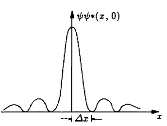
$ψ(x,t)=2c(k_0){\sin{\[∆k(v_gt-x)\]}}/{v_gt-x}e^{\i(ω_0t-k_0x)}$
at time $t=0$. The extension of the wave group can be characterized by the quantity $∆x$, i.e. the distance of the first minimum from the maximum. The condition for minima is
$|ψ(x,t)|^2=4c^2{\sin^2{\[∆kx)\]}}/{x^2}=0$
Thus we get for the first minimum
$∆k∆x=π$.
Inserting the momentum according to de Broglie, we get as an estimate for the Heisenberg uncertainty principle between position and momentum,
$∆p∆x≈πħ$.
This equation means that simultaneous determination of position and momentum in microscopic physics is not arbitrary exactly possible; both quantities are always related by the above relation.
Heisenberg's uncertainty principle is a consequence of the wave character of the particles (more exactly: of the guiding field of the particles). Using the superposition principle, the probability field is a wave packet superposed of waves with definite momentum (plane waves). The particle guided by this wave packet can be found with high probability within $∆x$. It is said to be localized in $∆x$. For such a localization $∆x$, a great number of plane waves with momenta near $ħ{\bo k}_0$, i.e. a momentum packet of width $ħ∆k$, is required. In classical physics, uncertainty relations of a similar form appear in processes involving waves. The transmission of a spatially limited electromagnetic signal by a sender occurs in the form of a wave packet containing waves of all frequencies (momenta). To get a wave with a single frequency, the sender must transmit for us long as possible (indefinitely), because the process of switching on and off contributes other frequencies. Therefore the wave spreads throughout space and no determination of its position is possible.
After this rather illustrative consideration, we will now derive the Heisenberg uncertainty principle in an exact way.
$-$
THE HEISENBERG UNCERTAINTY PRINCIPLE
Our starting point is an arbitrary particle state which is described by the wave function $ψ(x)$. Furthermore, we assume that $ψ$ is normalized to unity, and we restrict the calculation at first to one dimension only.
In deriving the uncertainty principle, we first have to determine a measure for the uncertainty, i.e. we have to define a measure for the deviation of $p_x$, or $x$, from their respective mean values
${\ov p_x}=∫ψ^{*}(x)\(-\iħ{∂}/{∂x}\)ψ(x)dx$ and ${\ov x}=∫ψ^{*}(x)xψ(x)dx$ .
Here, we use the mean-square deviations (dispersions) ${\ov ∆p_x^2}$ and ${\ov ∆x^2}$, which are defined by
${\ov ∆p_x^2}={\ov (p_x-{\ov p_x})^2}$, and ${\ov ∆x^2}={\ov (x-{\ov x})^2}$ .
For the following calculation we choose a suitable coordinate system: we assume the origin to be fixed in the point ${\ov x}$ and let it move with the centre of the distribution ${\ov x}$ so that at any time ${\ov x}=0$ is valid. Then we have
${\ov x}=0$, and ${\ov p_x}=0$ .
From the relation for the distributions (mean-square deviations) we get
${\ov ∆x^2}={\ov x^2}$, and ${\ov ∆p_x^2}={\ov p_x^2}$ .
The mean values are easily calculated, i.e.
${\ov x^2}=∫ψ^{*}x^2ψdx$,
${\ov p_x^2}=∫ψ^{*}(x)\(-ħ^2{∂^2}/{∂x^2}\)ψ(x)dx$ $=-ħ^2∫ψ^{*}(x){∂^2 ψ(x)}/{∂x^2}dx$ .
To establish a connection between the quantities $x^2$ and $p_x^2$, we consider the integral
$I(α)=∫↙{-∞}↖{∞}|αxψ(x)+{dψ(x)}/{dx}|^2dx\text" ,"$ $α∈\R$.
The integral is an absolute square. Therefore $I(α)$ is always greater than, or equal to zero. We multiply out and get
$I(α)=α^2∫↙{-∞}↖{∞} x^2∣ψ∣^2dx $ $+ α∫↙{-∞}↖{∞}x\({dψ^{*}}/{dx}ψ+ψ^{*}{dψ}/{dx}\)dx$ $+∫↙{-∞}↖{∞}{dψ^{*}}/{dx}{dψ}/{dx}dx$ .
It is helpful to introduce the following abbreviations:
$A=∫↙{-∞}↖{∞}x^2 ∣ψ∣^2 dx={\ov ∆x^2}$;
$B=-∫↙{-∞}↖{∞}x\({dψ^{*}}/{dx}ψ+ψ^{*}{dψ}/{dx}\)dx$ $=-∫↙{-∞}↖{∞}x{d}/{dx}(ψ^{*}ψ)dx$ $=-xψ^{*}ψ∣_{-∞}^{∞}+∫↙{-∞}↖{∞}ψ^{*}ψdx=1$ ,
because $ψ$ vanishes at the boundaries of the integration:
$C=∫↙{-∞}↖{∞}{dψ^{*}}/{dx}{dψ}/{dx}dx$ $=ψ^{*}{dψ}/{dx}∣_{-∞}^{∞}-∫↙{-∞}↖{∞}ψ^{*}{d^2ψ}/{dx^2}dx$ $={1}/{ħ^2}∫↙{-∞}↖{∞}ψ^{*}\(-ħ^2{d^2}/{dx^2}\)ψdx$ $={1}/{ħ^2}{\ov ∆p_x^2}$.
With the help of the abbreviations, the integral can be written
$I(α)=Aα^2-Bα+C≥0$ .
As this polynomial of second order in $α$ is positive definite according to $α∈\R$, the discriminant must necessarily be negative or vanish. $I(α)$ must be positive for all $α$. Therefore the roots of the quadratic equation $I(α)=0$ must be complex.
Thus the relation
$B^2-4CA≤0$
is necessarily fulfilled. Interesting in this inequality the values for $A$, $B$ and $C$ denoted before, we obtain the uncertainty relation for momentum and position in the form
${\ov ∆p_x^2}{\ov ∆x^2}≥{ħ^2}/{4}$
The experimentally proved wave nature of particles (meaning the existence of a guiding field) alone obviously implies that the momentum and coordinates of a particle cannot be simultaneously determined; these observables can never be measured simultaneously with arbitrary precision. This principle also valid for other pairs of physical quantities, provided that the product of their dimensions has the dimension of action.
...